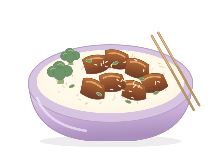
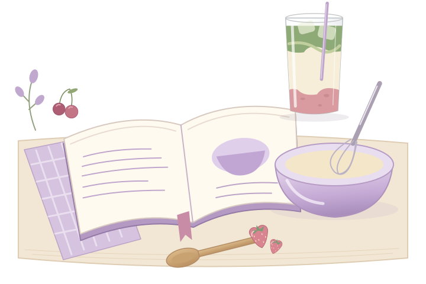

Teriyaki chicken rice bowl
Sticky chicken, fluffy rice, and a glossy sweet-savory sauce.

A little extra sauce for the rice. I have priorities.I keep this page close ♡
Comfort food, something sweet, and a playlist that’s probably too loud.
I have a soft spot for Japanese food, creamy pasta, and anything involving chocolate. These are the dinners I’d choose, the treats I’d make room for, and the little food opinions I can’t keep to myself.

My comfort dinners and something sweet at the end.
Sticky chicken, fluffy rice, and a glossy sweet-savory sauce.

A little extra sauce for the rice. I have priorities.I keep this page close ♡
Two little drinks that deserve their own corner. The rest have moved next door to my little drink bar.
My little opinions and things I tell myself.